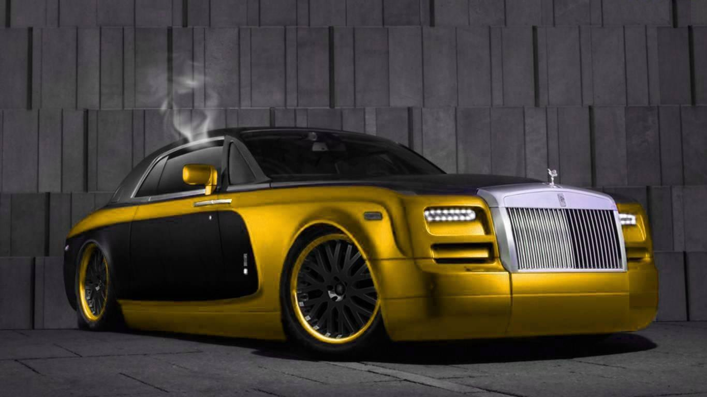

Rolls Royce

Rolls-Royce Motor Cars Limited engineers, manufactures and distributes luxury automobiles and automobile parts worldwide. Rolls-Royce Motor Cars Limited is a wholly owned subsidiary of BMW established in 1998 after BMW was licensed the rights to the Rolls-Royce brand name and logo from Rolls-Royce PLC and acquired the rights to the Spirit of Ecstasy and Rolls-Royce grill shape trademarks from Volkswagen AG. Rolls-Royce Motor Cars Limited operates from purpose-built administrative and production facilities opened in 2003 across from the historic Goodwood Circuit in Goodwood, West Sussex, England, United Kingdom. Rolls-Royce Motors Cars Limited is the exclusive manufacturer of Rolls-Royce branded motor cars since 2003.
Although the Rolls-Royce brand has been in use since 1906, the Rolls-Royce Motor Cars subsidiary of BMW AG has no direct relationship to Rolls-Royce branded vehicles produced prior to 2003. The Bentley Motors Limited subsidiary of Volkswagen AG is the direct successor to Rolls-Royce Motors and various other predecessor entities that produced Rolls-Royce and Bentley branded cars between the foundation of each company and 2003, when the BMW-controlled entity started producing cars under the Rolls-Royce brand.
The Rolls-Royce Phantom four-door sedan was the first product offered for sale in 2003. Since then, Rolls-Royce Motor Cars has expanded its product line up to include an extended wheelbase version of the Phantom sedan, a Phantom two-door coupé and Phantom convertible version and the less expensive Ghost four-door sedan and Wraith two-door coupe.